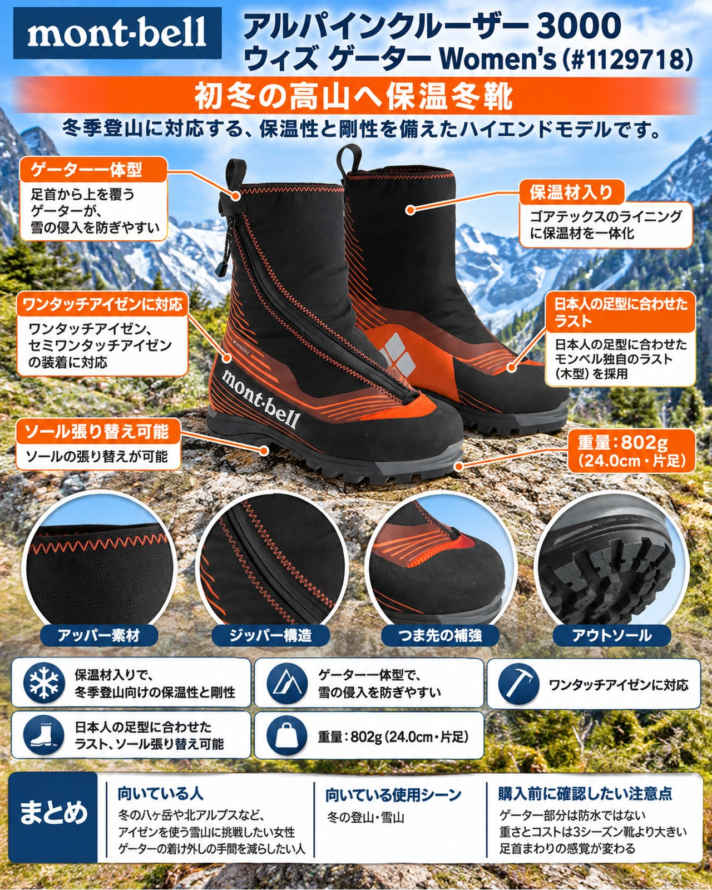

週末は冬型の気圧配置で冷え込み、3000m級の稜線では氷点下の日が増えてきました。涸沢上部ではすでに積雪や凍結が見られ、高山は「初冬」の装備が必要な季節です。今回紹介するのは、モンベルの冬季用アルパインブーツ「アルパインクルーザー 3000 ウィズ ゲーター Women's」。これまでYAMA FITでは秋の低山や縦走向けの3シーズン靴を取り上げてきましたが、今回は初めての「冬靴」です。これから雪山デビューを考えている女性や、残雪・初冬の高山に足を延ばしたい人に向けて、公式情報をもとに特徴と注意点をまとめます。
基本スペック
※価格・在庫は2026年11月7日に公式オンラインストアで確認したものです。在庫はサイズによって異なります。
| 項目 | 内容 |
|---|---|
| 商品名 | アルパインクルーザー 3000 ウィズ ゲーター Women's |
| 品番 | #1129718 |
| 価格 | ¥56,700（税込） |
| 重量 | 802g（24.0cm・片足） |
| サイズ | 23.0〜26.0cm（0.5cm刻み） |
| ワイズ | レギュラー |
| アッパー | 牛革、ポリエステル＋ポリウレタン、ゴム |
| ライニング | ゴアテックス ファブリクス（保温材入り） |
| アウトソール | トレールグリッパー® |
| カラー | オレンジ |
| その他 | ワンタッチアイゼン・セミワンタッチアイゼン装着可、ソール張り替え可 |
保温材入りで、冬季登山向けの保温性と剛性
ゴアテックスのライニングに保温材を一体化させた、冬季登山に対応するハイエンドモデルです。防水透湿性を持ちながら足先の冷えを抑える設計で、ソールにはカーボンシャンクが入り、ねじれに対する剛性を確保しています。凍った斜面でアイゼンを効かせて歩く冬山では、この硬さが安定感につながります。
ゲーター一体型で、雪の侵入を防ぎやすい
足首から上を覆うゲーターが、靴と一体になっています。ゲーターの表地は撥水加工、裏地は起毛素材で、風を通しにくく伸縮性もあります。「雪が付着しにくく、あたたかいゲーター」とされ、別体のスパッツを着け外しする手間も減らせます。使った人の声では、テントに持ち込むときに雪が付きにくく、保温性が高いこと、着脱がしやすいことが挙げられていました（個人の感想です）。
ワンタッチアイゼンに対応
ワンタッチアイゼン、セミワンタッチアイゼンの装着に対応しています。冬の3000m級を目指すなら、アイゼンの選択肢が広いのは大きな安心材料です。
日本人の足型に合わせたラスト、ソール張り替え可能
日本人の足型に合わせたモンベル独自のラスト（木型）を採用し、ワイズはレギュラーです。アウトソールはモンベル独自のトレールグリッパー®で、状態によってはソールの張り替えにも対応しています。高価な冬靴を長く使えるのはうれしいポイントです。
デメリット・注意点
- ゲーター部分は防水ではない：「ゲーター部に防水性はありません」と明記されています。濡れた雪の中を長く歩く場面や、雨交じりのみぞれでは、ゲーター部分からの浸水に注意が必要です。
- 重さとコストは3シーズン靴より大きい：片足802g（24.0cm）で、価格は¥56,700（税込）。秋の低山まで1足で兼用する靴ではなく、冬の高山に絞った装備と考えたほうがよいでしょう。
- 足首まわりの感覚が変わる：使った人の声では、同社の別モデルから履き替えた際に足首のホールドがゆるく感じ、最初は心許なかったという声がありました（個人の感想です）。ゲーター一体型は履き心地が独特なので、購入前に店頭で試し履きするのがおすすめです。
- アイゼンとの相性確認が必要：手持ちのアイゼンを使う場合、サイズによってはジョイント（連結バー）が合わないことがあります。購入時にアイゼンを持参して確認すると安心です。
- サイズ展開は23.0〜26.0cm：女性用モデルのため、これより大きいサイズは展開がありません。
向いている人・向いていない人
◎向いている人
- 冬の八ヶ岳や北アルプスなど、アイゼンを使う雪山に挑戦したい女性
- ゲーターの着け外しの手間を減らしたい人
- 寒さに弱く、保温性を重視したい人
△向いていない人
- 紅葉の低山や無雪期の縦走が中心の人（3シーズン靴のほうが軽く快適です）
- 湿った雪や雨の中を長時間歩くことが多く、ゲーター部の防水性も必要な人
- 26.0cmより大きいサイズが必要な人
まとめ
アルパインクルーザー 3000 ウィズ ゲーター Women'sは、保温材入りのライニング、カーボンシャンクによる剛性、ワンタッチアイゼン対応、そして雪の侵入を防ぐ一体型ゲーターを備えた、冬の高山向けの本格ブーツです。ゲーター部が防水ではない点や、重さと価格は理解しておきたいところですが、これから雪山を始める女性にとって頼れる1足になるはずです。高山が初冬を迎えたこの時期、冬山シーズンの準備として検討してみてはいかがでしょうか。
この記事で紹介した商品
価格・重量・在庫は各ブランド公式サイトの記載（確認日つき）にもとづきます。商品を押すと、購入先を選べます。
この記事にはアフィリエイト広告が含まれます。リンク先での購入により、当サイトが報酬を受け取る場合があります。山行の前には、最新の気象とルートの状況を必ずご確認ください。